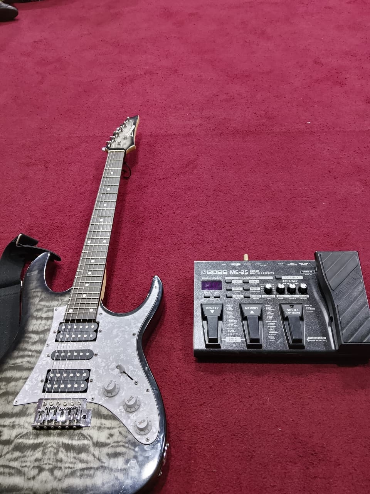
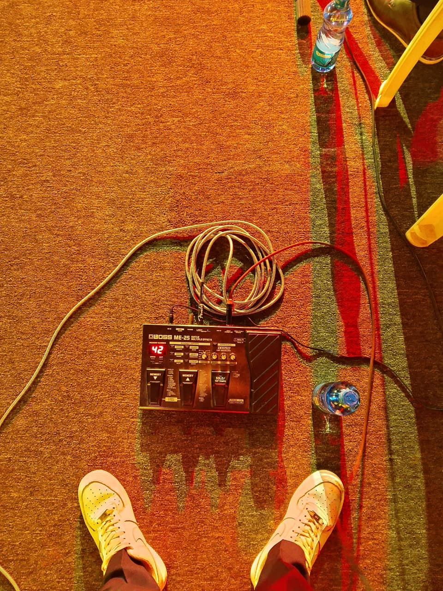
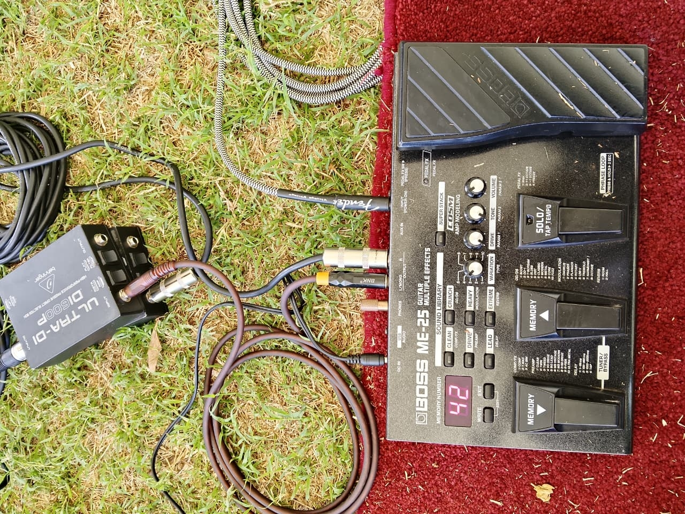

04
Jul
Friday · 6:00 PM
Gospel Night Live
CITAM Valley Road, Nairobi
Worship Guitarist · Nairobi, Kenya
Creating moments of worship
through guitar.
Mark your calendar
From intimate church services to large gospel conferences — come experience worship live.
Friday · 6:00 PM
CITAM Valley Road, Nairobi
Sunday · 4:00 PM
Mavuno Church, Nairobi
Saturday · 5:00 PM
Kenyatta International Convention Centre
Sunday · 10:00 AM
Nairobi Chapel, Ngong Road
Saturday · 7:00 PM
Carnivore Grounds, Nairobi
The man behind the music
I picked up my first guitar at 16, drawn not by ambition but by a quiet pull toward something deeper. What started as a few chords learnt in a small Nairobi church quickly became a calling — a way of translating what words alone couldn't carry.
At 22, I play lead guitar in a gospel band, supporting worship across churches, conferences, and gospel events throughout Kenya. For me, playing is less about performance and more about presence — I believe a single sustained note, played at the right moment, can shift an entire room into worship.
From intimate Sunday services to large-stage gospel conferences, I've had the privilege of supporting moments of worship that linger long after the music stops.
In Kenneth's words
I don't play to perform. I play to create a space where people can encounter something greater than themselves. The guitar is just the door — worship is what's on the other side.
For Kenneth, every note is intentional. Every set is a prayer. Whether he's playing to a congregation of twenty or a crowd of thousands, the goal is always the same — to get out of the way and let the music do what music was made for.
How it started
Every milestone that shaped the musician Kenneth is today.
At 16, I received my first acoustic guitar — a secondhand instrument that would change everything. Within weeks I was learning worship songs by ear in my family church.
I played my first full Sunday service as part of the worship team. Nervous hands, a room of faithful people, and the moment I finally understood what the guitar was for.
Switching from acoustic to electric opened a whole new sonic world. I began exploring effects pedals, lead playing, and the expressive range that would come to define my worship style.
I joined my first full gospel band as lead guitarist — a turning point that pushed me to grow fast. Playing alongside seasoned musicians sharpened both my technique and my ear for worship dynamics.
Playing a large-scale gospel conference for the first time — thousands in attendance, a full stage setup, and lights bright enough to feel like a different world. I held my own, and I haven't looked back since.
At 22, I'm still growing — as a worship guitarist, session musician, and live performer. The journey is far from over. Every service, every stage, every string is another verse in an unfinished song.
See & hear
Performance clips, worship moments, and a glimpse behind the scenes.
Makofi
Ebenezer
See A Victory Worship Medley
Ainuliwe Medley
Shield Me
Bwana Umeinuliwa
Stage lights, worship moments & behind the scenes.






What people say
Kenneth doesn’t just play notes. He helps create an atmosphere of worship that carries the entire congregation into God’s presence. Every time he picks up that guitar, something shifts in the room.
Playing alongside Kenneth is a joy. He listens, he responds, and he never tries to outshine anyone. He plays for the worship, not for the applause — and that makes all the difference.
We booked Kenneth for our annual gospel conference and the feedback from the congregation was extraordinary. His playing elevated the entire event. We won’t do another conference without him.
I’ve watched Kenneth grow from a nervous teenager playing his first Sunday service to a confident, anointed musician. His dedication to his craft and to God is unmistakeable.
What sets Kenneth apart is his spirit. He prays before he plays, he serves the team, and his humility on and off the stage is something every young musician should aspire to.
The rig
The instruments and tools that shape Kenneth’s sound on stage and in the studio.
Fender · Player Series
My go-to for live worship. The single-coil pickups deliver clean, bell-like tones that sit perfectly in a band mix without muddying the low end.
Yamaha · FG Series
The guitar that started it all for me. I still reach for it in intimate settings, songwriting sessions, and any moment where the raw warmth of an acoustic is the right call.
Fender · Blues Junior Series
A 15-watt all-tube combo that breaks up beautifully at moderate volumes. Warm, responsive, and perfectly sized for church stages without ever overpowering the mix.
Boss · Katana Series
My reliable solid-state backup with built-in effects. I use it for rehearsals and smaller venues where bringing the tube amp isn’t practical.
Strymon · Reverb Pedal
The cornerstone of my atmospheric sound. The hall and plate reverbs create the spacious, cathedral-like wash that defines my worship tone.
Boss · Digital Delay
Tap-tempo delay that locks to the band’s groove. I use it subtly for lead lines and more expressively during spontaneous worship moments.
Ibanez · TS9
Light, musical overdrive that pushes my amp into natural breakup. It adds warmth and sustain for lead playing without losing any clarity.
Ernie Ball · Volume Pedal
Smooth, silent volume swells between passages. Essential for the dynamic builds and quiet moments that I believe define a great worship set.
Elixir · Coated Strings
The coated winding keeps my tone bright and consistent across long sets. I put on a fresh set before every major event — and Elixirs last long enough between gigs.
Dunlop · Tortex Standard
Medium gauge for the balance between attack and flex. I always keep a handful taped to my mic stand for quick swaps mid-set.
TC Electronic · Polyphonic Tuner
Polyphonic tuning — I strum all six strings at once and see which ones are out. Fast, silent, and always first in my signal chain.
Mogami · Instrument Cables
Premium low-capacitance cables that preserve high-end detail and resist interference on stage. The last upgrade I made that had an immediately audible difference.
Get in touch
Whether you’re organising a gospel event, a church service, or a worship conference — Kenneth would love to be part of it.
Message directly
Fastest response — usually within a few hours
kenneth.Mugo@email.com
For formal bookings & event proposals
Tell Kenneth about your event and he’ll get back to you within 24 hours.